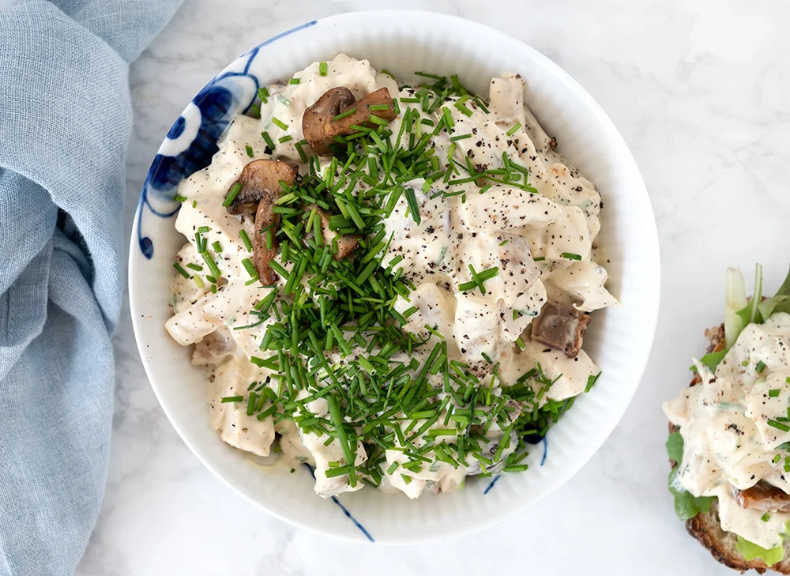

hønsekødssalat!

Beskrivelse
Hjemmelavet hønsesalat er et hit på rugbrød, i sandwich og til julefrokoster, påskefrokoster og andet godt!
Den lækre hønsesalat med sprød bacon, lækre saftige champignon og cremet dressing er nem at lave og jeg
serverer den altid til en lille julefrokost eller påskefrokost i min familie.
Gerne med ristet godt rugbrød eller surdejsbrød til, samt purløg og lidt sprød salat.
Det er en dejlig ret, som fint kan varieres lidt fra gang til gang. Se mine tips under opskriften.
ingredienser
- 300 g hønsebryst
- 3 dl grøntsagsbouillon
- 100 g bacon, i skiver
- 250 g champignon, i kvarte
- 1 tsk olivenolie
- 100 g hvide asparges, fra dåse
- 0,50 dl mayonnaise
- 1 dl cremefraiche 38%
- 1 knivspids karry, medium
- 1 tsk dijon sennep
- 1 håndfuld purløg, finthakket
- 1 tsk smør, og olie til stegning
- flagesalt
- sort peber, friskkværnet
Trin
- Kom hønsebryst i en gryde med grøntsagsboullion.
Kog op, læg låg på og lad det simre i 20 minutter, til kødet er mørt.
Skær hønsekødet i tern og lad det køl lidt af.
- Steg bacon på en pande i lidt smør, til det er sprødt. Skær bacon i tern og læg til side på en tallerken.
- Varm panden med baconfedt godt op med lidt ekstra olie og smør.
Lad smørret bruse af og rist champignonerne på panden ved høj varme.
Kom champignon i en sigte sammen med hvide asparges og lad dem dryppe af.
- Rør dressingen sammen af mayonnaise, creme fraiche, karry og dijonsennep, salt og peber.
Smag til og vend derefter hønsekød i tern, champignon, asparges og halvdelen af purløg
asparges og bacon i dressingen og drys med purløg inden servering.